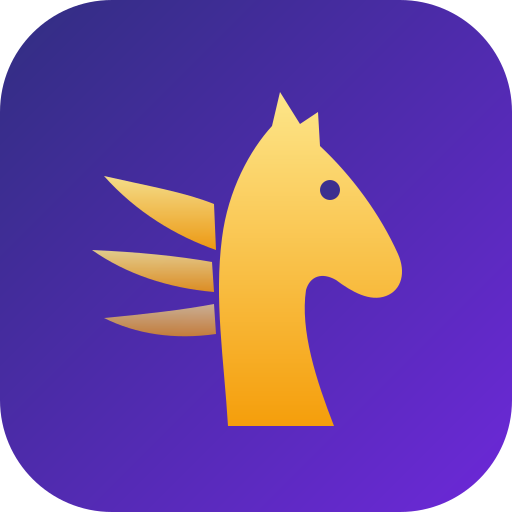

Katta va telefon ekranidagi o'lchamlar

Qanotli ot boshi: yol o'rnida qanot patlari. Afsonaviy, premium ko'rinish.
Tulpor nomining bosh harfi «T», ikki yonida qanotlar. Minimal va zamonaviy.
Himoya qalqoni ichida qanotli ot. Xavfsizlik va erkinlik birga.